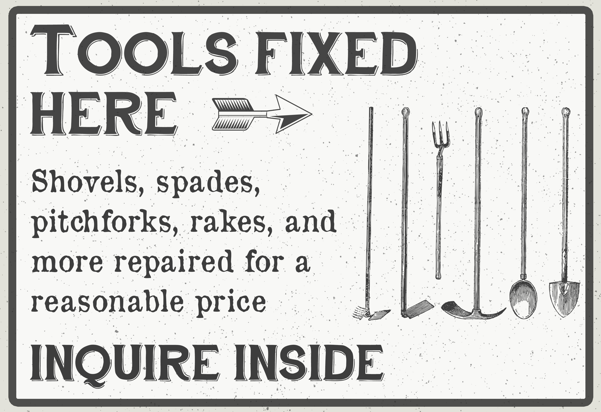

Explore some of my past projects by clicking the links below!
SAAMUSCThe Charles Bockler Project
Steppingstone Museum
SAAMUSC
Position: Program Chair, SAAMUSC
January 2021 - December 2021
As a student at the University of Missouri, I was involved with the student chapter of the Society of American Archivists. I was a program chair for the organization, and handled the page’s Facebook page. While in this position, I shared archives-related resources, news, and events with the page’s followers. Once my term in this position ended, I created instructional and planning documentation for the next person in the position, so that they could seamlessly take over the responsibilities.
This position helped me learn more about community engagement and social media planning.
The Charles Bockler Project
Position: Digitizer, Charles Bockler Project
November 2020 - December 2021
For this project, I photographed paintings, touched them up in Adobe Photoshop to remove scratches and chips, and added metadata to the files. This was valuable digitization experience, as well as experience in applying metadata knowledge that I learned during graduate school.
Steppingstone Museum
Position: Exhibit Researcher, Steppingstone Museum
December 2020 - June 2021
As a volunteer exhibit researcher for Steppingstone Museum, I researched a number of topics relating to 19th and early 20th century agricultural communities. This included large animal veterinarians, ice harvesting, canneries, blacksmithing, and miscellaneous relevant topics. For the blacksmith exhibit, I also was given the opportunity to create educational and decorative signage. Working with the curator of the museum, I used the research findings to create educational posters about how blacksmiths work with metal, and what tools they use. For the decorational signage, we picked topics and visuals appropriate for the time, and used them to make the exhibit look more authentic. Throughout my research I also gathered images of historical photographs, labels, and signs that we could use as a reference for the exhibit.
